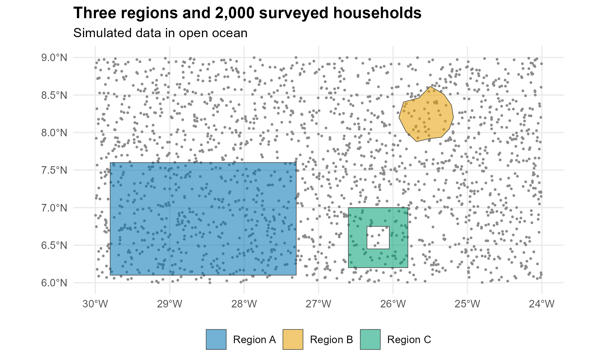
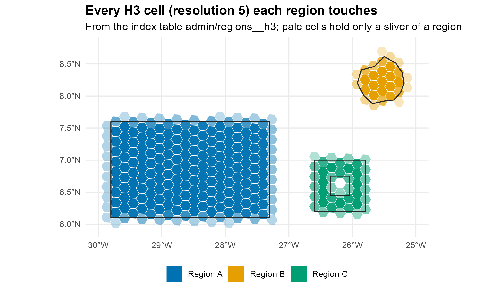
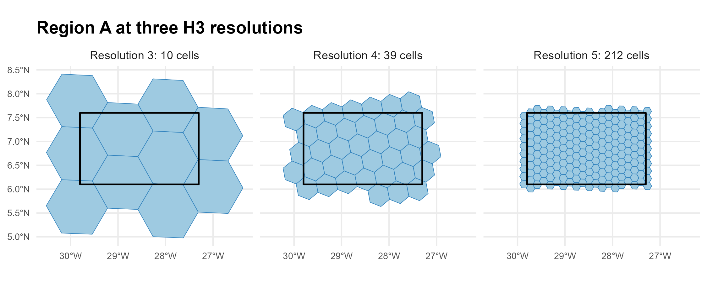
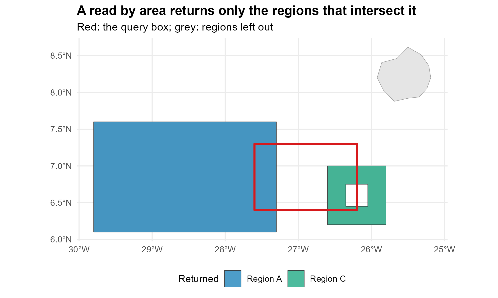
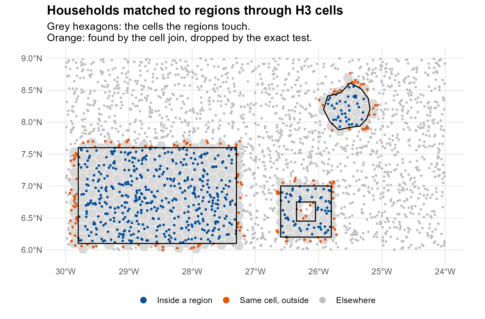

Regions and households: a worked example
Source:vignettes/regions-and-households.Rmd
regions-and-households.RmdThis article walks through one common task from start to end: a few
large polygons that stand for regions, and a household survey
whose points must be matched to those regions. It keeps the steps few
and shows each result on a map, so that the figures can be printed and
read on their own. The details of every function are in
vignette("rcs") and
vignette("geospatial").
All data are simulated by rcs_sim_polygons() and
rcs_sim_points(), in a box of open ocean, and the store
lives in a temporary folder that is removed at the end. Geocoding needs
the package h3o and the maps need ggplot2; without them the code below
is shown but not run.
library(ggplot2)
# One look for every map: white background, light grid, legend below.
theme_set(
theme_minimal(base_size = 11) +
theme(
plot.background = element_rect(fill = "white", colour = NA),
panel.grid = element_line(colour = "grey92"),
plot.title = element_text(face = "bold"),
legend.position = "bottom",
legend.title = element_text(size = 10)
)
)
region_colours <- c(
"Region A" = "#0072B2", "Region B" = "#E69F00", "Region C" = "#009E73"
)1. Simulate regions and households
The first three simulated polygons are large: a rectangle, a round
shape with many vertices, and a square with a hole. They play the
regions. The households are 2,000 simulated points spread over the whole
box, with a household number hh_id, an income,
a survey stratum and the survey wave they
belong to. Most households lie outside every region, as in a survey that
covers more ground than the regions of interest.
regions <- rcs_sim_polygons(100, seed = 1) |>
filter(id %in% 1:3) |>
transmute(region_id = id, name = paste("Region", LETTERS[id]))
regions
#> Simple feature collection with 3 features and 2 fields
#> Geometry type: POLYGON
#> Dimension: XY
#> Bounding box: xmin: -29.8 ymin: 6.1 xmax: -25.18752 ymax: 8.615313
#> Geodetic CRS: WGS 84
#> # A tibble: 3 × 3
#> region_id name geometry
#> * <int> <chr> <POLYGON [°]>
#> 1 1 Region A ((-29.8 6.1, -27.3 6.1, -27.3 7.6, -29.8 7.6, -29.8 6.1))
#> 2 2 Region B ((-25.18752 8.2, -25.21461 8.36477, -25.31917 8.513204, -2…
#> 3 3 Region C ((-26.6 6.2, -25.8 6.2, -25.8 7, -26.6 7, -26.6 6.2), (-26…
households <- rcs_sim_points(2000, seed = 2) |>
transmute(hh_id = id, wave = 1L, income = value, stratum = cat)
households
#> Simple feature collection with 2000 features and 4 fields
#> Geometry type: POINT
#> Dimension: XY
#> Bounding box: xmin: -29.99602 ymin: 6.000069 xmax: -24.00438 ymax: 8.999597
#> Geodetic CRS: WGS 84
#> # A tibble: 2,000 × 5
#> hh_id wave income stratum geometry
#> * <int> <int> <dbl> <chr> <POINT [°]>
#> 1 1 1 71.6 d (-28.89071 8.038392)
#> 2 2 1 119. a (-25.78576 7.971659)
#> 3 3 1 90.7 a (-26.56004 8.49038)
#> 4 4 1 116. c (-28.99169 7.395568)
#> 5 5 1 118. d (-24.33696 6.5153)
#> 6 6 1 77.5 d (-24.33915 7.001152)
#> 7 7 1 80.1 b (-29.22505 7.546142)
#> 8 8 1 113. d (-24.99931 8.626292)
#> 9 9 1 115. e (-27.19189 6.60906)
#> 10 10 1 105. d (-26.7001 6.65429)
#> # ℹ 1,990 more rows
ggplot() +
geom_sf(data = households, colour = "grey55", size = 0.4) +
geom_sf(data = regions, aes(fill = name), alpha = 0.55, colour = "grey20") +
scale_fill_manual(values = region_colours, name = NULL) +
labs(
title = "Three regions and 2,000 surveyed households",
subtitle = "Simulated data in open ocean"
)
2. Create a local store and write the regions
store_connect(create = TRUE) creates a store in a
folder: a few catalog files (_catalog.parquet,
_files.parquet, …) that list what the store holds.
store_write() then writes an sf object like a
table. The dataset name admin/regions is also its folder;
key names the column that identifies a row.
Because the regions are geospatial, the write geocodes them:
it adds the column h3, the H3 cell (resolution 5 by
default, about 250 km² per cell) that holds the largest part of each
region, and the column bbox, its bounding box. A region
this large touches many cells, so the write also stores an index
table, admin/regions__h3, with one row for every cell
a region touches and the share of the region’s area in that
cell. Spatial reads use these columns to skip rows and files without
opening any geometry.
root <- file.path(tempdir(), "regions-store")
st <- store_connect(root, create = TRUE)
store_write(st, regions, "admin/regions",
title = "Regions",
description = "Three large simulated polygons standing in for regions.",
key = "region_id"
)
#> ℹ Writing "admin/regions": 3 rows in 1 file, and its index table in 1 file.
#> ✔ primary <tempdir>/regions-store 2/2 files sent 19.7 kB 0.2s
#> ✔ MD5 identical for 2 files in 1 location. Catalogs updated.The folder now holds one Parquet file for the regions and one for
their index table, each with a small manifest.
print(st, index = TRUE) shows the index table, which is
otherwise hidden:
list.files(root, recursive = TRUE, pattern = "parquet$")
#> [1] "_catalog.parquet"
#> [2] "_files.parquet"
#> [3] "_history.parquet"
#> [4] "admin/regions/part-abaa2b5d13f2dd7d.parquet"
#> [5] "admin/regions__h3/part-27012d8a5b1e6ff9.parquet"
print(st, index = TRUE)
#> ── rcs store ───────────────────────────────────────────────────────────────────
#> Locations:
#> primary local <tempdir>/regions-store
#> History: off (store default)
#> Datasets: 2
#> name kind rows size files updated
#> admin/
#> regions geospatial 3 13.4 kB 1 2026-11-27 23:54
#> regions__h3 table 282 6.3 kB 1 2026-11-27 23:543. The regions as H3 cells
The index table can be read like any dataset. Its column
.rcs_id links each cell to a row of
admin/regions; reads drop that column unless it is asked
for, so here it is named in columns.
region_ids <- store_read(st, "admin/regions",
columns = c(.rcs_id, region_id, name), geometry = FALSE
)
region_cells <- store_read(st, "admin/regions__h3",
columns = c(.rcs_id, h3, share)
) |>
inner_join(region_ids, by = ".rcs_id") |>
select(region_id, name, h3, share)
region_cells
#> # A tibble: 282 × 4
#> region_id name h3 share
#> <int> <chr> <h3> <dbl>
#> 1 2 Region B 85564823fffffff 0.0346
#> 2 2 Region B 85564827fffffff 0.0556
#> 3 2 Region B 8556482bfffffff 0.00796
#> 4 2 Region B 8556482ffffffff 0.0558
#> 5 2 Region B 85564837fffffff 0.0252
#> 6 2 Region B 855648a7fffffff 0.00000101
#> 7 2 Region B 85564903fffffff 0.00158
#> 8 2 Region B 8556490bfffffff 0.0370
#> 9 2 Region B 85564913fffffff 0.00280
#> 10 2 Region B 8556491bfffffff 0.0550
#> # ℹ 272 more rows
count(region_cells, name)
#> # A tibble: 3 × 2
#> name n
#> <chr> <int>
#> 1 Region A 212
#> 2 Region B 29
#> 3 Region C 41To draw cells, h3o turns them into hexagons;
rcs_h3_hex() gives the text form of the cells that h3o
reads.
cell_polygons <- function(cells) {
st_set_crs(st_as_sfc(h3o::h3_from_strings(rcs_h3_hex(cells))), 4326)
}
region_hex <- st_sf(region_cells, geometry = cell_polygons(region_cells$h3)) |>
mutate(cover = share / max(share), .by = name)
ggplot() +
geom_sf(
data = region_hex, aes(fill = name, alpha = cover),
colour = "white", linewidth = 0.2
) +
geom_sf(data = regions, fill = NA, colour = "grey15", linewidth = 0.5) +
scale_fill_manual(values = region_colours, name = NULL) +
scale_alpha_continuous(range = c(0.25, 1), guide = "none") +
labs(
title = "Every H3 cell (resolution 5) each region touches",
subtitle = "From the index table admin/regions__h3; pale cells hold only a sliver of a region"
)
The resolution is set by h3_res in
store_write(). A coarser resolution gives fewer, larger
cells, a finer one more and smaller cells. rcs_geo_index()
computes the same cells in memory, without a store; here it covers
Region A at three resolutions (crossing_only = FALSE keeps
every cell, interior included).
region_a <- filter(regions, name == "Region A")
by_res <- lapply(3:5, function(r) {
idx <- rcs_geo_index(region_a, "region_id", h3_res = r, crossing_only = FALSE)
st_sf(
resolution = paste0("Resolution ", r, ": ", nrow(idx), " cells"),
geometry = cell_polygons(idx$h3)
)
})
by_res <- do.call(rbind, by_res)
ggplot() +
geom_sf(data = by_res, fill = "#9ecae1", colour = "#3182bd", linewidth = 0.2) +
geom_sf(data = region_a, fill = NA, colour = "black", linewidth = 0.6) +
facet_wrap(vars(resolution)) +
labs(title = "Region A at three H3 resolutions") +
theme(axis.text = element_text(size = 7))
4. Read the regions back
store_read() reads a dataset into R. Without more
arguments it returns the whole sf object, with the columns
h3 and bbox the write added.
columns picks columns (tidyselect, as in
dplyr::select()) and geometry = FALSE leaves
the geometry out, which makes a read of the attributes alone fast even
when the polygons are large.
store_read(st, "admin/regions")
#> Simple feature collection with 3 features and 4 fields
#> Geometry type: POLYGON
#> Dimension: XY
#> Bounding box: xmin: -29.8 ymin: 6.1 xmax: -25.18752 ymax: 8.615313
#> Geodetic CRS: WGS 84
#> # A tibble: 3 × 5
#> region_id name h3 bbox$xmin $ymin geometry
#> <int> <chr> <h3> <dbl> <dbl> <POLYGON [°]>
#> 1 2 Region B 8556494bfffffff -25.9 7.88 ((-25.18752 8.2, -25.21461…
#> 2 1 Region A 857c4bd3fffffff -29.8 6.1 ((-29.8 6.1, -27.3 6.1, -2…
#> 3 3 Region C 857c5ab3fffffff -26.6 6.2 ((-26.6 6.2, -25.8 6.2, -2…
#> # ℹ 2 more variables: bbox$xmax <dbl>, $ymax <dbl>
store_read(st, "admin/regions", columns = c(region_id, name), geometry = FALSE)
#> # A tibble: 3 × 2
#> region_id name
#> <int> <chr>
#> 1 2 Region B
#> 2 1 Region A
#> 3 3 Region Cintersects keeps only the regions that intersect a query
shape, here a box between two regions. The read compares the boxes and
cells first and tests the geometry exactly only for the rows left.
store_intersects() does the same on a lazy query from
store_open().
query <- st_as_sfc(st_bbox(
c(xmin = -27.6, ymin = 6.4, xmax = -26.2, ymax = 7.3),
crs = st_crs(4326)
))
hit <- store_read(st, "admin/regions", intersects = query)
hit$name
#> [1] "Region A" "Region C"
ggplot() +
geom_sf(data = regions, fill = "grey90", colour = "grey60") +
geom_sf(data = hit, aes(fill = name), alpha = 0.7, colour = "grey20") +
geom_sf(data = query, fill = NA, colour = "#D7191C", linewidth = 1) +
scale_fill_manual(values = region_colours, name = "Returned") +
labs(
title = "A read by area returns only the regions that intersect it",
subtitle = "Red: the query box; grey: regions left out"
)
5. Write the survey
The households are written as their own dataset,
survey/households, with partition = "wave":
one folder per wave (wave=1/), so that later waves can be
added without rewriting the first. Points get an h3 cell
and a bbox like the regions; a point never crosses a cell
edge, so no index table is written. The cell is computed once, by this
write, at the same resolution as the regions’ cells.
store_write(st, households, "survey/households",
title = "Households",
description = "Simulated household survey, one point per household.",
key = "hh_id",
partition = "wave"
)
#> ℹ Writing "survey/households": 2,000 rows in 1 file (partition wave).
#> ✔ primary <tempdir>/regions-store 1/1 files sent 115.3 kB 0.1s
#> ✔ MD5 identical for 1 file in 1 location. Catalogs updated.A second wave comes in later. mode = "update" replaces
the partitions whose values occur in the new rows and keeps the others:
here wave = 2 is new, so it is added and wave 1 is left as
it is. Only the 300 new rows are geocoded, with the resolution and
engine recorded for the dataset.
wave_2 <- rcs_sim_points(300, seed = 3) |>
transmute(hh_id = id + 10000L, wave = 2L, income = value, stratum = cat)
store_write(st, wave_2, "survey/households",
title = "Households",
description = "Simulated household survey, one point per household.",
mode = "update"
)
#> ℹ Updating "survey/households": 0 partitions replaced, 1 added, 1 kept.
#> • wave = 2: new, 300 rows
#> ℹ Writing "survey/households": 2,300 rows in 2 files (partition wave).
#> ✔ primary <tempdir>/regions-store 1/2 files sent 30.4 kB 0.2s
#> ✔ MD5 identical for 2 files in 1 location. Catalogs updated.6. Match households to regions through H3 cells
Both datasets now carry H3 cells of resolution 5, so a household can
be matched to a region by a plain join on h3, with no
geometry read at all: each household gets every region that touches its
cell. The cells are read back from the store, not computed again.
hh_cells <- store_read(st, "survey/households",
columns = c(hh_id, wave, h3), geometry = FALSE
)
by_cell <- inner_join(hh_cells, select(region_cells, name, h3),
by = "h3", relationship = "many-to-many"
)
nrow(by_cell)
#> [1] 735A cell on a region’s edge lies partly outside it, so the join is a generous first step: it finds every household of a region, and some neighbours. The exact test then runs only on these candidates, a fraction of the survey:
candidates <- store_open(st, "survey/households") |>
filter(hh_id %in% !!by_cell$hh_id) |>
collect()
inside <- st_join(candidates, select(regions, name), left = FALSE)
count(st_drop_geometry(inside), name)
#> # A tibble: 3 × 2
#> name n
#> <chr> <int>
#> 1 Region A 469
#> 2 Region B 39
#> 3 Region C 61The same exact answer comes from a spatial read of each region,
store_read(st, "survey/households", intersects = region),
which uses the cells and boxes the same way inside the store. For the
map, every household is labelled by how it was matched:
hh_class <- store_read(st, "survey/households", columns = hh_id) |>
mutate(match = case_when(
hh_id %in% inside$hh_id ~ "Inside a region",
hh_id %in% by_cell$hh_id ~ "Same cell, outside",
.default = "Elsewhere"
), match = factor(match, c(
"Inside a region", "Same cell, outside", "Elsewhere"
)))
ggplot() +
geom_sf(
data = region_hex, fill = "grey85", colour = "white", linewidth = 0.2
) +
geom_sf(data = hh_class, aes(colour = match), size = 0.6) +
geom_sf(data = regions, fill = NA, colour = "black", linewidth = 0.5) +
scale_colour_manual(
values = c(
"Inside a region" = "#08519C", "Same cell, outside" = "#E6550D",
"Elsewhere" = "grey75"
),
name = NULL
) +
guides(colour = guide_legend(override.aes = list(size = 2.5))) +
labs(
title = "Households matched to regions through H3 cells",
subtitle = paste(
"Grey hexagons: the cells the regions touch.",
"Orange: found by the cell join, dropped by the exact test.",
sep = "
"
)
)
7. Without geocoding
Geocoding takes time on large datasets. When spatial reads are rare,
or the queries are compact boxes, geocode = FALSE stores
the geometries with their bbox only: no h3
column and no index table. A read by area still returns the right rows,
filtered by boxes alone.
store_write(st, regions, "admin/regions_plain",
title = "Regions, boxes only",
description = "The same regions without H3 cells.",
key = "region_id",
geocode = FALSE
)
#> ℹ Writing "admin/regions_plain": 3 rows in 1 file.
#> ✔ primary <tempdir>/regions-store 1/1 files sent 12.8 kB 0.1s
#> ✔ MD5 identical for 1 file in 1 location. Catalogs updated.
store_read(st, "admin/regions_plain", intersects = query)$name
#> [1] "Region A" "Region C"8. Clean up
The store is a folder; removing it removes everything written above.
unlink(root, recursive = TRUE)